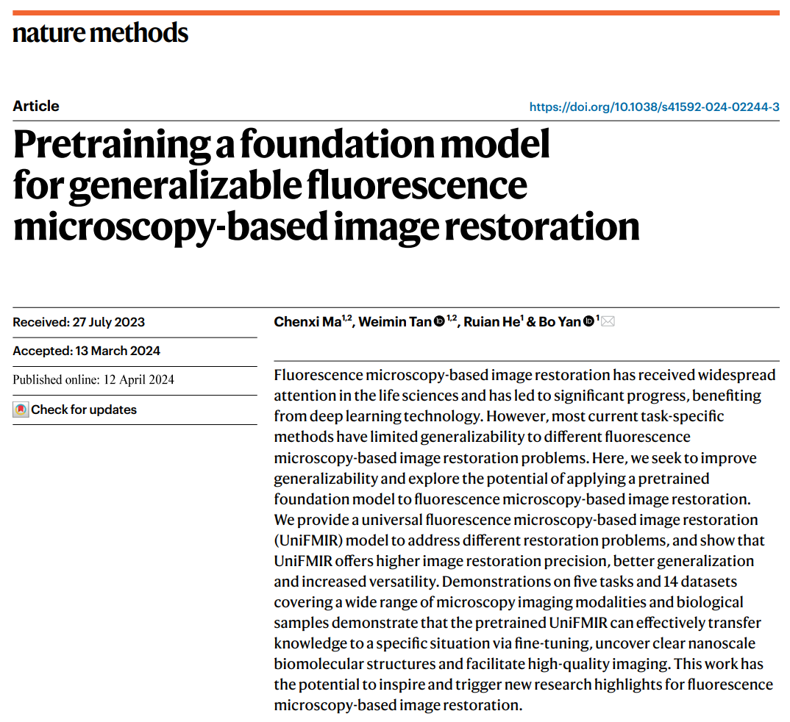
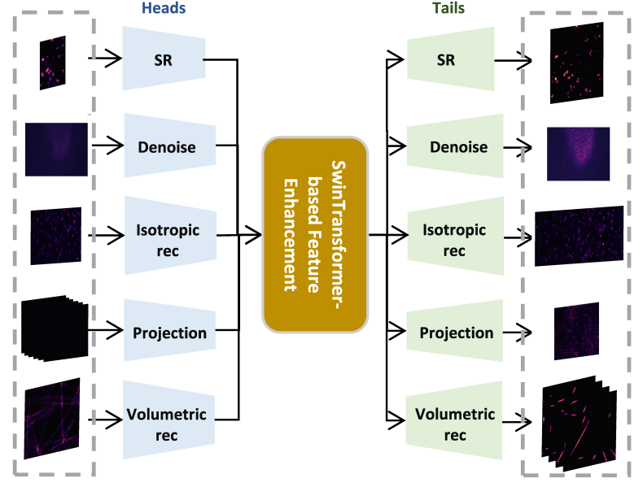
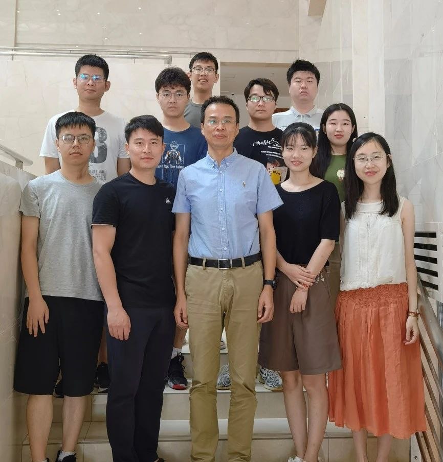

“不用最昂贵的镜头，也能拍出高清照片”，近年来，面对人们快速增长的影像清晰度需求，众多手机、数码相机厂商不断探索如何在控制成本的情况下，使用AI模型进一步提升像素级。这一次，同样的技术理念，却被复旦大学计算机科学技术学院教授颜波带领的团队迁移到了生命科学实验室里的常用研究工具“荧光显微镜”上。

4月12日，科学期刊《自然-方法》（Nature Methods）以《基于广义荧光显微镜的图像恢复的预训练基础模型》（Pre-training a Foundation Model for Generalizable Fluorescence Microscopy-Based Image Restoration）为题刊发团队成果，他们发明的跨任务、多维度图像增强基础AI模型（UniFMIR），实现了对现有荧光显微成像极限的突破。
何为荧光显微镜？这类显微镜利用部分物质受紫外线照射后可发荧光的特性，以及通过染色让本不具有该特性的物质发出荧光，可以观察细胞内物质的吸收、运输、化学物质的分布及定位等。在分辨率方面，它远超普通光学显微镜0.2微米极限，到达观测分子的纳米尺度，是生命科学领域不可或缺的研究工具。自2006年横空出世，荧光显微镜已帮助全球科学家研制出了对帕金森氏症、阿尔茨海默氏症和亨廷顿氏症等神经退行性疾病更有针对性的治疗方法。
尽管荧光显微镜的观测分辨率已达到纳米尺度，但科学家们并不满足于此。由于显微镜光学硬件和生物样本光敏感性（在荧光照射下，生物活性降低）带来的挑战，过去几年中，生命科学和计算机领域的科学家们开始携手探索用AI的路径来增强图像质量的办法。然而，成像模式多样、降质类型复杂、增强过程迥异等一系列问题，使得这一任务极具挑战性，于是，大多数科学家选择“每次解决一个问题”，聚焦于研制针对单一需求的“专有”AI模型。
来自复旦大学的这支AI for Science团队则选择直击挑战，以“一站式集成”为目标，直接构建了首个“统一”的荧光显微镜图像增强AI基础模型（UniFMIR），大幅提升在“图像超分辨率重构、各向同性重构、3D去噪、图像投影和过程重建”五大任务方向上的性能。
UniFMIR采用了基于Swin Transformer结构的特征增强模块来增强特征表示，针对不同任务的网络流程共享相同的特征增强计算。通过收集的大规模数据集对模型进行预训练，并使用不同图像增强任务的数据微调模型参数，UniFMIR展现出比专有模型更好的增强性能和泛化性。

荧光显微镜图像增强基础模型（UniFMIR）架构
这意味着，加载了UniFMIR的荧光显微镜可能成为生命科学实验室中的“神器”。科学家们能更清晰地观察到活细胞内部的微小结构和复杂过程，加速全球生命科学、医学研究、疾病诊断相关领域的科学发现和医疗创新；同时，在半导体制造、新材料研发等领域，该成果可以用来提升观察和分析材料微观结构的质量，从而优化制造工艺和提高产品质量。
UniFMIR的成功研发标志着我国在关键科学仪器领域“国产设备+基础模型”的组合能有效减少对进口设备的依赖，增强国家科技自主性和产业安全，也为全球科研领域的进步贡献了中国智慧和力量。
“这次我们想到把AI 图像增强技术应用于荧光显微镜上，并构建UniFMIR，出发点就是AI for Science。我们的模型为荧光显微镜图像增强提供了一个通用的解决方案，通过简单的参数微调便可应用于不同任务、成像模式和生物结构。未来，生命科学实验室的科学家们可通过进一步扩展训练数据的数据量和丰富度来不断强化UniFMIR的图像重构能力。”颜波对UniFMIR被用于更多类型实验的可能性充满信心。

该项研究由复旦大学计算机科学技术学院数字媒体实验室完成。实验室博士后马晨曦博士和青年研究员谭伟敏博士为该工作的共同第一作者，颜波为通讯作者，其他作者还包括实验室博士生何瑞安。该研究工作得到国家自然科学基金委和上海市科委项目资助。
论文链接：
https://www.nature.com/articles/s41592-024-02244-3
Code：
https://github.com/cxm12/UNiFMIR